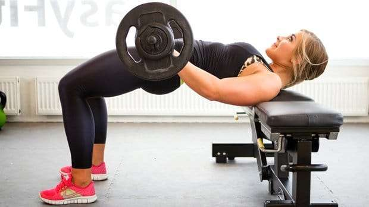
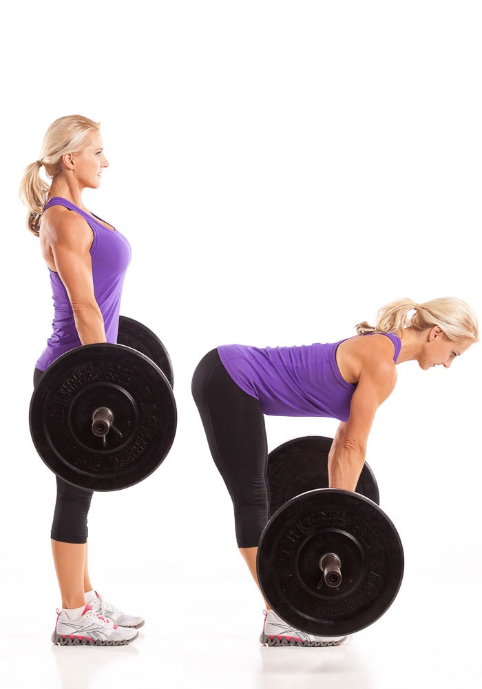
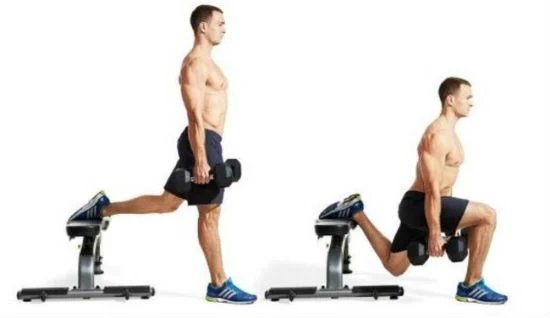
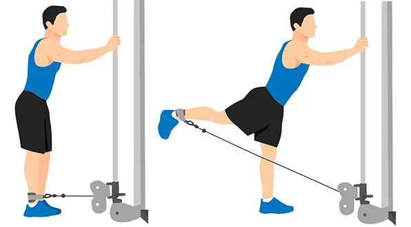

A elevção pelvica é um exercicio que tem como principal movimento a extensão de quadril, sendo o principal músculos trabalhado o glueto maximo.
o stiff com a barra é um exercicio que trabalha principalmente os musculos da parte de trás da coxa e dos glúteos.
O agachamento bulgaro é um exercicio que trabalha principal os músculos das pernas e dos gluteos
O gluteo na polia é um exercicio que trabalha principalmente os musculos do gluteo.
